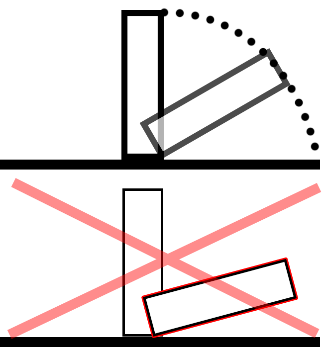

Hi All,
There is probably an easy way of achieving what I want, but after several days of playing with this I just can’t get my head around this issue.
I have few Nodes inside 3D Scene with RigidBodies etc. Some of these nodes have to fall on their side (either way on 3 axis, but always on one axis only. Might go left or right, front or back) without sliding (remaining in their original collision position)
See picture for visual, top part shows what I’m trying to achieve while the bottom shows what exactly happens.

I was trying to use constraints but with the collision enabled node wouldn’t even move, with collision disabled the node was rotating around the point (main problem here is that there is no collision with the node below)
Increasing restitution makes it even more awkward and unrealistic.
I could create several point-to-point constraints and active them as required (depending on node rotation), maybe checking for position on update and rectifying as required or is there a different approach I should take?